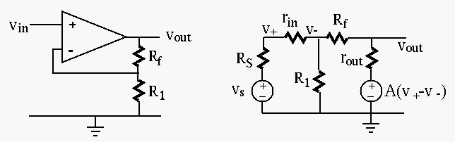

Next: About this document ...

Find the three parameters of this non-inverting amplifier: open-circuit
voltage gain  , input resistance
, input resistance  and output resistance
and output resistance  .
.
 (
( ) to the positive input so that , and denote the voltage
across by , i.e., . Applying KCL to
the node of , we get
) to the positive input so that , and denote the voltage
across by , i.e., . Applying KCL to
the node of , we get
 |
 |
||
|
 we get
we get
.
In particular, when , and the circut becomes the voltage follower.
) and assume
the input current is  , then we have
, i.e.,
. Applying KCL to the node of
we get:
, then we have
, i.e.,
. Applying KCL to the node of
we get:
 |
|
||
|
 as in the voltage follower case.
as in the voltage follower case.
 . First, as shown above,
the open-circuit output voltage is
. First, as shown above,
the open-circuit output voltage is
 (12)
(12)
|
|||
|